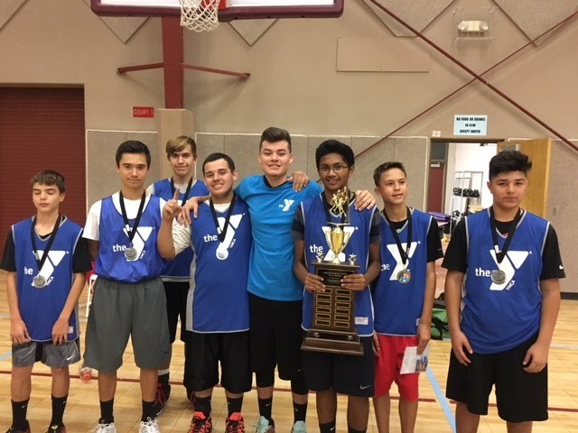
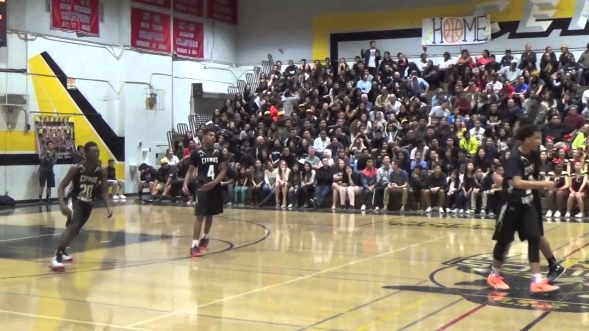

|
Freshman year is the perfect time to establish yourself as a good student and start on extracurricular activities. My best and only activity in freshman year is playing Basket Ball.
Basketball is a limited contact sport played on a rectangular court. While most often played as a team sport with five players on each side, three-on-three, two-on-two, and one-on-one competitions are also common. The objective is to shoot a ball through a hoop 18 inches (46 cm) in diameter and 10 feet (3.048 m) high that is mounted to a backboard at each end of the court.
A team can score a field goal by shooting the ball through the basket being defended by the opposition team during regular play. A field goal scores three points for the shooting team if the player shoots from behind the three-point line, and two points if shot from in front of the line. A team can also score via free throws, which are worth one point, after the other team is assessed with certain fouls. The team with the most points at the end of the game wins, but additional time (overtime) is mandated when the score is tied at the end of regulation. The ball can be advanced on the court by passing it to a teammate, or by bouncing it while walking or running (dribbling). It is a violation to lift, or drag, one's pivot foot without dribbling the ball, to carry it, or to hold the ball with both hands then resume dribbling.
The game has many individual techniques for displaying skill—ball-handling, shooting, passing, dribbling, dunking, shot-blocking, and rebounding. Basketball teams generally have player positions, the tallest and strongest members of a team are called a center or power forward, while slightly shorter and more agile players are called small forward, and the shortest players or those who possess the best ball handling skills are called a point guard or shooting guard. The point guard directs the on court action of the team, implementing the coach's game plan, and managing the execution of offensive and defensive plays (player positioning).
Basketball is one of the world's most popular and widely viewed sports.[1] The National Basketball Association (NBA) is the most popular and widely considered to be the highest level of professional basketball in the world and NBA players are the world's best paid athletes by average annual salary per player. Outside North America, the top clubs from national leagues qualify to continental championships such as the Euro league and FIBA Americas League. The FIBA Basketball World Cup and Men's Olympic Basketball Tournament are the major international events of the sport and attract top national teams from around the world. Each continent hosts regional competitions for national teams, like EuroBasket and FIBA AmeriCup.
The FIBA Women's Basketball World Cup and Women's Olympic Basketball Tournament feature top national teams from continental championships. The main North American league is the WNBA (NCAA Women's Division I Basketball Championship is also popular), whereas strongest European clubs participate in the Euro League Women.
|


|